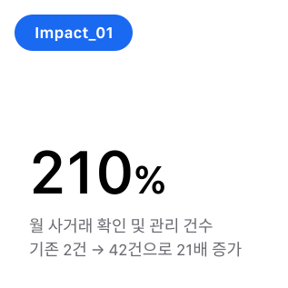
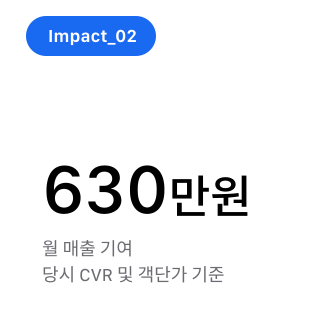

사거래 방지 기획
배경
패피스는 고객이 견적을 요청하면 파트너사가 이에 응찰하고, 앱 내 채팅을 통해 세부 상담을 이어가는 구조로 운영됩니다. 수선 서비스는 품목마다 작업 범위와 최종 비용이 달라지는 특성이 있어, 정교한 작업을 위해 유선으로 상세 내용을 조율하는 과정은 고객 경험 측면에서 필수적이고 자연스러운 단계로 자리 잡고 있습니다.
하지만 이러한 상담 과정의 자율성을 악용하여, 일부 파트너사가 고객에게 플랫폼 결제가 아닌 개인 계좌 입금을 유도하는 사례가 발생하고 있습니다. 이는 플랫폼의 공식 결제 절차를 거치지 않고 외부에서 거래가 이루어지는 사거래 현상으로 이어지고 있습니다.
결과적으로 이러한 행위는 플랫폼의 수익성을 저해할 뿐만 아니라, 서비스가 보장하는 거래의 안전성을 위협하는 주요 리스크 요인이 되고 있습니다. 특히 플랫폼 외부 거래 시 발생할 수 있는 분쟁이나 피해로부터 고객을 보호하기 어렵다는 점에서 대책 마련이 필요한 상황입니다.
문제
문제 정의
-
1. 관리 사각지대
현상 상담 과정에서 발생하는 외부 거래 비중을 파악할 데이터가 없음.
리스크 정확한 사거래 규모 확인 및 데이터 기반의 대응 전략 수립 불가.
-
2. 고객 보호 한계
현상 플랫폼 결제가 아닌 개인 계좌 입금 시 분쟁 발생에 개입하기 어려움.
리스크 피해 발생 시 플랫폼의 중재를 받을 수 없어 서비스 신뢰도 하락.
-
3. 수익성 저해
현상 플랫폼을 통해 상담하고 결제는 외부에서 진행하는 ‘이탈 현상’ 발생.
리스크 정당한 수수료 수취가 누락되어 비즈니스 성장에 악영향.
-
4. 운영 근거 부재
현상 사거래 부정 행위에 대한 명확한 제재 규정과 대응 매뉴얼이 부족함.
리스크 사거래가 확인되어도 페널티 부여 등 운영 처리에 일관성 부족.
목표
- 1. 선제적 탐지 사거래 징후(연락처·계좌 공유 등)를 실시간으로 포착하여 관리 가능한 데이터 영역으로 편입합니다.
- 2. 사용자 경험 보존 일률적인 차단 대신 리스크 구간만 선별 관리하여, 서비스 본연의 상담 흐름과 편의성을 유지합니다.
- 3. 운영 체계 확립 금지 행위 및 페널티 정책을 명문화하여, 일관성 있고 객관적인 운영 근거를 확보합니다.
- 4. 지속 가능한 효율 과도한 시스템 비용 투입 없이, 사용자 넛지를 통해 자발적인 결제 이탈 방지 구조를 설계합니다.
실행
1. 리스크 선행 지표 정의
사거래 전환 확률이 가장 높은 핵심 트리거를 ‘선행 단서’로 규정하여 탐지 효율을 높였습니다.
- 전화번호 공유: 유선 상담 전환을 통한 외부 결제 유도 징후
- 계좌번호 공유: 직접 송금 방식의 비공식 거래 징후
2. 통합 관리 정책 수립
탐지부터 제재까지 일관된 대응이 가능하도록 운영 기준을 명문화했습니다.
- 정책 신설: 사거래 정의, 금지 행위 유형, 위반 단계별 페널티 조항 마련
- 기준 일원화: 탐지-분류-안내 프로세스를 통합하여 운영 효율 극대화
3. 이상 징후 탐지 및 대응 자동화
실시간 모니터링 시스템을 구축하여 관리 공수를 최소화했습니다.
- 자동 알림: 정보 공유 발생 시 내부 채널(Slack) 즉시 전송
- 자동 분류: 해당 건을 ‘사거래 관리 대상’으로 즉시 지정 및 주문 상태 트래킹
4. 사용자 넛지(Nudge) 및 인지 유도
강제적인 차단 대신 심리적 장벽을 높여 자발적 준수를 유도했습니다.
- 실시간 안내: 정보 공유 채팅 스레드 내 ‘사거래 방지 주의’ 메시지 즉시 노출
- 가치 전달: 플랫폼 내 결제가 제공하는 안전장치(보호 체계)를 강조하여 신뢰 중심의 결제 유도
결과


📈 정량적 성과
- 사거래 포착 및 관리 효율 21배 증대 기존 월 2건에 불과했던 사거래 식별 건수를 월 42건으로 확대하여 관리 가시성을 대폭 확보함.
- 월 평균 약 630만 원의 추가 매출 기여 이탈될 뻔한 거래를 플랫폼 내 결제로 유도하여 실질적인 수익성 개선에 기여함.
🌟 정성적 성과
- [고객 관점] 안전한 거래 환경 조성 보호 체계 강화: 플랫폼 내 결제 유도를 통해 사후 분쟁 시 고객이 보호받을 수 있는 안전장치 마련. 경험 최적화: 무분별한 제약 대신 ‘필요한 시점’에만 안내를 제공하여 상담의 흐름과 서비스 신뢰도를 동시에 유지.
- [사업 관점] 데이터 기반의 운영 구조 확립 리스크 가시화: 블랙박스 영역이었던 사거래를 정량적으로 측정하고 관리할 수 있는 시스템 구조 구축. 선순환 구조: 결제 이탈 방지를 통해 플랫폼 매출을 방어하고 서비스 지속 가능성 확보.
고려 사항
‘차단’이 아닌 ‘관리’ 중심의 리스크 헷지 전략
플랫폼의 특성상 어뷰징과 사거래는 필연적으로 발생할 수밖에 없는 과제입니다. 프로젝트 초기에는 직관적인 ‘차단’ 중심의 접근을 고려했으나, 이를 실제 설계에 적용할 경우 모든 사용자 간의 접촉을 의심하고 제한하게 되어 서비스 본연의 가치를 훼손할 위험이 있었습니다.
특히 수선 서비스처럼 견적과 작업 범위가 유동적인 고관여 서비스에서는 전화 상담을 통한 세부 조율이 필수적이며 자연스러운 과정입니다. 이러한 맥락에서 사거래 방지를 목적으로 정상적인 상담 경험까지 일률적으로 제한하는 것은, 대다수 선량한 사용자에게 불편을 초래하고 플랫폼에 대한 신뢰를 떨어뜨리는 결과를 낳을 수 있다고 판단했습니다.
따라서 본 프로젝트에서는 모든 접촉을 차단하기보다, 정상적인 사용자 경험은 보존하되 리스크 발생 지점을 선별적으로 관리하는 방향을 설정했습니다. 구체적으로는 사거래 전환 확률이 급격히 높아지는 ‘전화번호 또는 계좌 정보가 공유되는 시점’에 집중했습니다. 해당 구간에서 사거래 유의 안내를 실시간으로 노출함으로써 고객에게는 플랫폼 정책 준수를 인지시키고, 파트너에게는 해당 상담이 시스템에 의해 관리되고 있다는 넛지(Nudge)를 제공하여 자발적인 행동 변화를 유도했습니다.
운영 측면에서는 이러한 이상 징후를 신속히 탐지할 수 있는 체계를 구축하는 동시에, 정책적으로는 금지 행위와 위반 시 페널티를 명확히 정의하여 운영의 근거와 일관성을 보완했습니다. 이는 막연한 제한이 아닌 명확한 기준에 근거한 예방 조치를 통해 플랫폼 내 신뢰를 공고히 하기 위함입니다.
결론적으로, 완전한 차단이라는 불가능한 목표에 과도한 비용을 투입하기보다는 사용자 경험과 통제 사이의 균형을 맞추는 데 초점을 맞췄습니다. 일부 리스크를 감수하더라도 서비스의 전체적인 활성도를 저해하지 않으면서 사거래 이탈을 유의미하게 줄일 수 있는 구조가 플랫폼의 성장에 보다 지속 가능하고 효율적인 전략이라고 판단했기 때문입니다.